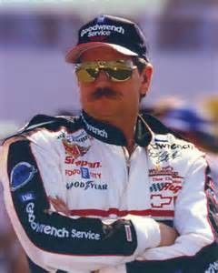

If it assume my noble father’s person,
I’ll speak to it though hell itself should gape
And bid me hold my peace.
— Hamlet, 1.2
I’d give up everything I got to have my dad back.
— Dale Earnhardt Sr.
The only thing I really feel strong about is that I’m going to see my daddy again. Somehow, someway, I’m going to see my daddy again.
— Dale Earnhardt Jr.
The ghost of Hamlet’s father rules the play. His first appearance, having occurred already when the action opens, has traumatized the sentinels on watch at Elsinore into confusing their roles. Bernardo is so spooked that, although he’s coming to relieve Francisco, he behaves as if he’s already on duty. When Bernardo asks, “Who’s there?” Francisco is quick to correct him: “Nay, answer me. Stand and unfold yourself.”
“Who’s there?” indeed. That the father’s ghost makes his first appearance not to the son, but to watchmen guarding Elsinore, validates his existence—at least at first. Two acts later, when the Ghost returns to Hamlet as he castigates his mother for taking up with his uncle, Claudius, Queen Gertrude can’t see the apparition, although the audience can. Is the Ghost still “real”? Or just a figment of Hamlet’s imagination that we are privileged to view from his perspective? Even if its existence is objectively verifiable, what is its nature? Is he an embodiment of the elder Hamlet, as he intimates by referring to himself as Hamlet’s “father’s spirit”? Horatio avers the Ghost’s resemblance to the man himself. “I knew your father,” he says to the young Hamlet. “These hands are not more like.” Or is the apparition an evil being whose deceptive appearance masks malevolence, as Hamlet suspects in act 2 when he plans to use “The Mouse-trap” to “catch the conscience of the king”?
The spirit that I have seen
May be a dev’l, and the dev’l hath power
T’ assume a pleasing shape.
The Ghost’s change in appearance from act 1—where, we’re repeatedly told, he’s dressed in the armor he wore when he slew the elder Fortinbras in combat—to act 3, in which, according to one early version of the text, he reappears dressed “in his night-gown,” does little to settle the question of his benignity or malignity.
Whatever the Ghost’s moral make-up, his agenda—to stir his son to revenge—is as clear as his emotional manipulation is blatant. The Ghost exhorts and extorts. When he finally talks to Hamlet in the play’s fifth scene, he greases the wheels of filial devotion by relating the horrors of his confinement to purgatory, where he’s been cast, he eventually protests, by being murdered without benefit of confession. Hamlet’s grief over his father’s death is already well established; the thought of his father’s prolonged, unjust suffering can only augment his anguish and vulnerability. When the Ghost next plays upon Hamlet’s affection—“List, list, O, list! / If thou didst ever thy dear father love”—the prodigiously articulate son can only emote, “O God!” Contending that “The serpent that did sting thy father’s life / Now wears his crown,” the Ghost takes advantage of Hamlet’s disgust for his uncle. “O my prophetic soul!” responds Hamlet, who has suspected the “o’erhasty marriage” of his mother and uncle from the start and who, even before encountering the Ghost for the first time, implicates Claudius for “Foul deeds” that “will rise, / Though all the earth o’erwhelm them, to men’s eyes.”
The word disposition recurs throughout Hamlet in reference to a character’s state of mind, inclination, or perspective. If Hamlet is disposed toward believing Claudius capable of murdering the king, he is also passionate about communing once more with his deceased father. The universal longing of a child to retrieve a lost parent is no doubt more “particular” in Hamlet’s case, to use Gertrude’s word, because the parent died prematurely and unexpectedly. All at once, Hamlet finds himself coping with his father’s death, his mother’s precipitous entrance into a marriage considered incestuous at the time, and, thanks to Claudius’ maneuvering, the frustration of his succession to Denmark’s throne and yet the sense that, if “the time is out of joint,” he must “set it right.”
Among its many accomplishments and contributions, Hamlet avails the audience a wrenchingly realistic glimpse of a son mourning his father. To understand the frame of mind and emotional condition of perhaps the most consummate, most enigmatical, and best known fictional character ever created is to begin appreciating Dale Earnhardt Jr.’s circumstances upon his father’s shocking fatality, at age forty-nine, during the 2001 Daytona 500. If Hamlet elucidates the Earnhardt family’s drama, moreover, the illumination works both ways: Dale Sr., aka “The Intimidator” and “The Man in Black,” is but one in a cast of living characters who enrich our view of fictional persons like those in Hamlet. Dale Sr.’s father, Ralph, known as “Ironheart” (whence derives reference to his son as “Ironhead”) is another such character. He too died abruptly and young, of a heart attack, at forty-five, leaving Dale to make his own way toward becoming NASCAR’s reigning monarch.
Extraordinary circumstances, like royalty of any sort, can both obscure and complicate the common humanity of losing a parent. Beneath Hamlet’s princely position is a male adolescent undergoing all of the familial, sexual, and personal confusion of a college student. In 2001, Dale Jr. said of losing Dale Sr., “Since he died, people have tried to make it sound . . . theatrical, but we were pretty much like any other father and son.” Yet both figures’ public roles exempt them from the ordinary. Of all modern sports, NASCAR is the most dominated by family dynasties, and, as King Hamlet’s son, Prince Hamlet is “to the manner born.” Their individual stories share the element of private trauma overlapping with their lineage and the public exposure it brings. But most crucial of all for both sons is, arguably, their emotional dependency upon fathers of public prominence, questionable reliability and integrity, and daunting expectations of their offspring. King Hamlet and Dale Earnhardt Sr. exercise extraordinary control in general, but especially over their sons’ sense of obligation.
* * * * * * * * * * * * * * * * * * * * * * * * * * * * * * * * * * * * * * * * * * * * * * * * * * *
There are more things in heaven and earth, Horatio,
Than are dreamt of in your philosophy.
— Hamlet, 1.5
Shakespeare was born too soon.
— Detective Andrew Yancy, in Carl Hiasson’s Bad Monkey
The multiple ambiguities about the Ghost in Hamlet are partly what Shakespeare scholar Elihu Pearlman has in mind when he cites Shakespeare’s innovation in his essay “Shakespeare at Work: The Invention of the Ghost.” Shakespeare’s ghost is but one of several that populated Elizabethan revenge tragedy, including an earlier, now lost, version of Hamlet. As the instigator of revenge, the stage ghost derived from the early first-century Roman playwright Seneca, whose closet dramas include Phaedre and Thyestes, the latter a felt presence in Shakespeare’s gory Titus Andronicus. Pearlman argues that Shakespeare transformed the earlier stage ghost—a nearly laughable, hardly scary, strident phantom—into an entity made truly terrifying by virtue of his very life-likeness. The ghoul that Elizabethan audiences were expecting was replaced, says Pearlman, by a more human figure with “almost a ghost-next-door quality.”
Still, the play keeps open from the start the crucial possibility that the Ghost is every bit the blood-thirsty monster that his literary predecessors proved to be. Horatio initially reads the Ghost as a “guilty thing,” although Hamlet assures Horatio and others upon first encountering the spirit himself that “It is an honest ghost, that let me tell you.” Yet the veracity of the Ghost’s account of his murder isn’t established until much later—in act 3, when Claudius confesses to the murder in the audience’s, but not Hamlet’s, hearing. Until that point, Shakespeare’s audience is as unsure as Hamlet about whether the Ghost’s story is “honest,” and, although Hamlet thinks he’s proven Claudius’s guilt when his uncle is perturbed by “The Mouse Trap,” Hamlet never has certain evidence of such guilt. Even if he did, though, the validity of the Ghost’s command to “Revenge this most unnatural and foul murther” would remain debatable. The Ghost’s revelation of a true crime doesn’t in itself justify Hamlet’s avenging it.
The Ghost’s several injunctions concerning revenge, moreover, create a moral maze for the protagonist. Bewailing his lot in purgatory as “horrible, O horrible, most horrible!” the Ghost appeals to the son’s sense of responsibility for relieving his father’s anguish: “If thou hast nature in thee, bear it not.” The Ghost then adds to the list of the prince’s tasks that of addressing the seamy entanglement of his mother and Claudius—“Let not the royal bed of Denmark be / A couch for luxury and damned incest”—while tacking on the contradictory prohibition, “Taint not thy mind, nor let thy soul contrive / Against thy mother aught.” Hamlet, then, is supposed to intervene in his mother’s sexual behavior on his deceased father’s behalf while remaining pure of thought and letting “heaven” deal with her through “those thorns” of conscience “that in her bosom lodge,” which ought “To prick and sting her.” Seriously?
That Shakespeare himself took the role of the Ghost in performance is a well known historical supposition that teases curiosity without yielding clear meaning. One implication of the pairing is thematic: the play’s creator aligns himself with the progenitor of revenge. Both are, in a sense, fathers; both direct the action. Shakespeare extends his authority by indulging in some self-conscious metatheatrical play when, having returned to “purgatory” via a trap door on the stage floor, the Ghost continues to make his presence known from what Hamlet calls the “cellarage”—that is, the physical space beneath the stage. The reference calls attention to the artificiality of the staging with a dry humor that persists as the Ghost backs up Hamlet’s efforts to swear his companions to secrecy about what they’ve just seen. “Swear,” thunders the Ghost from below the stage. “Well said, old mole,” responds Hamlet in approbation. Upon the Ghost’s third warning to “Swear,” Hamlet’s fellows obey, as they probably would have done sooner had they not been comically stricken with astonishment.
Throughout act 1, Shakespeare, with a dash of self-parody, establishes the Ghost’s free agency and self-possession, as suggested in the very first scene when Horatio and his fellows fail to exert control over the spirit’s speech and movement. Horatio’s futile order to the Ghost—“Stay, illusion!”—is ludicrous in its self-contradiction. When the Ghost moves to exit and Horatio directs the officer Marcellus to “Stop it,” Marcellus wryly replies, “Shall I strike it with my partisan?” Impervious to human power of any sort, the Ghost secures total mastery.
Conjuring fear one moment and amusement the next, alternately signaling “wicked” and “charitable” “intents,” the Ghost’s fluctuating character hints of similar mixed traits about the living king and his bellicose milieu. In particular, King Hamlet’s portrayal as a warrior suggests the positive attributes of a vanquisher and of Denmark’s defender, but also negative associations with excessive violence. Horatio explains before Prince Hamlet’s first appearance that Fortinbras, King of Norway, “prick’d on by a most emulate pride,” once “Dar’d” Hamlet’s father “to the combat.” When King Hamlet defeated King Fortinbras, adds Horatio, the latter “Did forfeit (with his life) all those his lands / Which he stood seiz’d of, to the conqueror.”
Horatio’s apparent admiration for the “valiant” king notwithstanding, King Hamlet’s embroilment with Fortinbras, his double of sorts, has initiated a dubious cycle of retribution. As the play opens, Elsinore is arming itself against the anticipated attack of the younger Fortinbras, yet a third competitor, whom Horatio describes as one “Of unimproved mettle hot and full.” Fortinbras fils “Hath in the skirts of Norway here and there / Shark’d up a list of lawless resolutes” whose apparent mission is “to recover of us, by strong hand / And terms compulsatory, those foresaid lands / So by his father lost.” “Strong hand” is another of Shakespeare’s inside jokes: the name Fortinbras literally translates from French as “strong arm.” But the reference is of a piece with the broader portrait of Fortinbras as a thug, a hothead whose rage for acquiring lands is as indiscriminate as a shark’s feeding frenzy.
Although Horatio foists blame on the Fortinbras clan for their aggression, King Hamlet’s willingness to be “Dar’d” in the first place makes him a co-conspirator in the conflict that has led to Norway’s current threat. But the Ghost’s call to Hamlet to avenge his murder on Claudius even more flagrantly invokes the cyclical violence that the ongoing Hamlet / Fortinbras struggle frames. The Ghost’s sense of injustice is compelling, to be sure. He was cheated, he submits, “Of life, of crown, of queen” by a “wretch whose natural gifts were poor / To those of mine!” However legitimate the Ghost’s complaints of foul play and Hamlet’s indignity at his uncle’s usurpation, though, the efficacy of revenge to right past wrongs is a prospect riddled with doubt, not least because of its invitation to further violence.
Yet however morally ill-advised revenge might be, the creature demanding it has an extraordinary—yes, haunting—grip on the protagonist. To fulfill the Ghost’s command is also to win the father’s approval, and what son wouldn’t crave esteem from a father who died before his son had the chance to show his worth? Hamlet is at once beholden to and trapped by the Ghost. Either to ignore or follow the apparition’s charge somehow spells guilt. Hamlet’s notorious, multi-faceted psychological and emotional instability, liberally observed over the centuries, traces to the Ghost’s grip on his heart and mind.
By all reports, Dale Earnhardt Sr. displayed every bit the warrior’s spirit, confounding mix of traits, and influence on his son that characterize King Hamlet. He was and has remained as worshipped an icon as the elder Hamlet, miniature pictures of whom, Prince Hamlet tells Rosencrantz and Guildenstern, once garnered “twenty, forty, fifty, a hundred ducats a-piece.” The phenomenal record that elevated Earnhardt in life and canonized him in death was undergirded by preternatural racing talent. In one account of his driving at Myrtle Beach, South Carolina, Dale came so close to a wall as to shave the ivy growing on it without damaging the car. Added to that raw ability was a legendary determination. To the consternation of his fellow racers, he would do anything, including wrecking someone else’s car, to win. “That’s stepping over the line,” commented Darrell Waltrip on such reckless, self-serving disregard. Richard Petty, a member of another NASCAR dynasty, knew firsthand Dale’s “guts and guile.” “He didn’t worry about finesse,” Petty remembers in Sportscentury’s documentary on Earnhardt. Observes fellow driver Cale Yarborough with his own lack of finesse, “It’d be hard to castrate him with a chain saw.” “He literally had no fear,” adds NASCAR’s Benny Parsons. Rather, he was governed, says Dan Fowler, narrating the documentary, by a “passion for risk” and the “need to control everything around him.” Earnhardt’s rough aggression, akin to King Hamlet’s pagan heroism, seemed to date to an earlier time. Dale Sr. was no one to turn down a “dare.”
That Earnhart had one face for his competitors and another for his public is repeatedly validated in statements among those who knew him. Jeff Byrd, President of Bristol Motor Speedway until his death in 2010, said that Dale “had the best smile you’ve ever seen and the worst stare you’ve ever seen.” Sportscaster Whit Watson tells of Dale’s being interviewed on camera, flashing that best smile while grinding his steel-toed boot into a reporter’s foot. He could cow reporters with a verbal skill akin to Hamlet’s ghost. Dan Fowler elaborates on Earnhardt’s dark playfulness: “what may have begun as mischief became black comedy, as an atmosphere of danger, played out under the guise of humor.” Some of those who knew him off the track bear witness to a third face, reserved for his intimates. Especially around his daughters, Kelley and Taylor, he was a “big softie,” says news anchor Brian Williams of his friend. Darrell Waltrip concedes that, in private, Dale was a “real human being,” but quickly qualifies that description: “The rest [of] the time, he was an animal.”
Father-son cycles pertain as prominently to the Earnhardts as to the Hamlet and Fortinbras clans. Earnhardt’s interviews often identified his father, Ralph, as his inspiration and instigation. In 1987, to Sam Moses at Sports Illustrated, he said, “I love racing. . . . It was born and bred in me by my daddy, and that’s why I’m so good at it. Racing comes just like breathing to me. It’s always going to be there, like my damn heartbeat.” Ralph taught his son by both precept and example. “Establish your territory,” he told Dale, advice that Robert Edelstein, in NASCAR Generations, says, “would go a long way toward defining [Dale’s] driving style.” Earnhardt himself illustrated the point with a story told in Leigh Montville’s book At the Altar of Speed, published a few months after the fatal crash. At the Metrolina Speedway near Charlotte, both father and son were fighting to take the lead. “I’m fourth,” recounted Dale.
I still can’t get by the guy [who’s third]. He’s too fast. With a few laps to
go, I see Daddy come up behind me. He’s lapping me. I move over to let him
pass, but Daddy moves with me. He comes up on my bumper! He starts pushing
me! He pushes me past the other guy! Daddy wins! I finish third. The other
guy, fourth, is so mad, complaining everywhere about “those Earnhardts,”
but there’s nothing he can do. It’s over.
So was rooted the Earnhardts’ reputation for ruthlessness. Montville quotes family acquaintance Freddie Smith remarking on Ralph’s tutelage of Dale. “I’d see him showing Dale things at the old Concord [North Carolina] dirt track. . . . Ralph would be in one car, Dale in another. Ralph would be pushing him deep into corners from behind, showing him what to do.” The outcome of Ralph’s instruction was, of course, Earnhardt’s domination of NASCAR.
Although Dale’s dropping out of school after failing eighth grade created a deep rift between Ralph and son, they eventually reconciled to the extent that Ralph’s sudden death devastated Dale, who then was twenty-two. “Sometimes, late at night,” Dale once said, “I would sit down and cry for an hour without stopping.” Reports Montville on Ralph’s lingering presence in Dale’s life, “When he was working on his car, he found himself talking to Ralph, asking how to fix that carburetor or what gear he should be using.” Whatever the ultimate extent of Ralph’s effect on Dale’s performance, he felt his father’s absence as his victories and firsts mounted. Montville represents Dale’s recurring longing to share his conquests with his father through an imagined inner dialogue.
What if Daddy hadn’t died? . . . If Ralph had only lived until he was fifty-one, he would have seen his son become Rookie of the Year and then a Winston Cup champion. . . . what if he could have seen it all? Wouldn’t that have been the biggest kick there was?
Such influence of father on son has been almost eerily recapitulated in the history of Dale Sr. and Dale Jr. Sports journalist Lars Anderson, reflecting on over a decade of following Dale Jr., takes as an article of faith that Dale Jr.’s “father will continue to shadow him, ghostlike, for the rest of his life.” The two Dales hadn’t been close during Dale Jr.’s childhood because of Sr.’s relentless racing schedule. “I missed him bad sometimes,” Dale Jr. has said, “but when he was around, it was great.” Like Hamlet, Dale had also gone away to school—in his case, to military school because of bad behavior. Whether or not the desire to connect with his father was his primary attraction to NASCAR, Jr. surprised Sr. by entering his world. “I never thought Dale Jr. was going to be a race driver,” Dale Sr. once confessed. “He never seemed to have the interest.” But even before the accident, younger Dale described racing as his conduit to the father he was still just getting to know. “My racing is all for my daddy,” he said in his early days as a driver. “I don’t care much about anything else.”
Former Charlotte Motor Speedway president and manager Humpy (Howard) Wheeler, whose intimacy with the Earnhardts dates to when he worked for Firestone and Ralph was his test-driver, saw just that filial aspiration in Dale Jr. “He loved his dad to death,” Wheeler tells me during a long conversation one late summer afternoon. “All Dale Jr. ever wanted to do was drive a car, just like his father.” I ask Wheeler about Dale Sr.’s disposition as Jr.’s father; he responds, without hesitation, “old school.” “He was really tough with Jr.,” Wheeler explains, “just exactly like his father was with him.” Some of Sr.’s lessons stuck with his son as Ralph’s had with him. When Charlie Rose asked Jr. what a NASCAR winner needs, he replied, “fearlessness, guts, . . . tenacity and determination.”
Competition between the two generations would necessarily spring, then, from this father’s expectations of this son. In one instance, a 1999 IROC event in Michigan, Sr. and Jr. vied for fifty laps, the elder finally eking out first place by mere inches. About the thrill of the father-son triumph, Dale Sr. said, “To be racing your son on a track at the speeds that we were, that’s a pretty awesome feeling . . . . I don’t think you could top it.” If the son was indeed seeking approval through competing on the father’s turf, he won that adulation, too. “I’m proud of him, you know, of his capabilities,” said father of son, “but I’m just proud of him as a dad.” While that pride was, as far as we know, more than Hamlet ever heard from his father, it was cut short when Dale Sr. lost his life at Daytona in 2001.
The accident involved a final racetrack competition between the two Dales, a circumstance that, although it has received little attention in the event’s coverage to date, is the stuff of rich narrative. Dale Jr. was racing for Dale Earnhardt, Inc. (DEI) in a contest that had already involved a nineteen-car pileup. Several cars were totaled, but no one was seriously injured. In the final lap, Dale Jr. was in second place, behind Michael Waltrip, who was also driving for DEI, and Dale Sr., representing Richard Childress, was battling for third with long-term rival and friend Kenny Schrader. On Turn 3, Sterling Marlin tapped Dale Sr., causing him to run into a wall at a forty-five-degree angle, at which point Schrader couldn’t avoid hitting him directly. As one account puts it, “The two slid down the track and into the infield grass. Schrader quickly jumped out. Earnhardt did not.”
Humpy Wheeler shared with me his understanding of exactly how Earnhardt died, adding that the information had never before been made public. Although reports to date have blamed Earnhardt’s faulty seat belt, Wheeler said, Earnhardt, who had a penchant for working on his own seat, had improperly reinstalled the belt, which was chafing against hard metal. In an accident that Wheeler contends was otherwise “innocuous,” the seat belt snapped.
While some witnesses believe Dale Sr. was behaving true to form by trying to edge out his son, the majority, including Dale Jr., interpret Sr.’s driving not as offensive, but as defensive of Jr.’s second-place position, as well as Waltrip’s first place, and, thus, DEI’s standing. Dale Sr. may have felt torn between securing his own victory or enabling his son and team to win, and Dale Jr. is potentially enmeshed in feeling responsible for, if not guilty about, his father’s death. Until 1998, when Dale Sr. won the Daytona 500 after nineteen previous failures to do so, that race had been his holy grail. To have forfeited his own position to his son in this particular instance would be a grand gesture. To die while doing so, leaving Dale Jr. in second place, would, at the least, render his son indebted and, at most, invest him in making his father’s death matter through proving, now more than ever, his own worth.
* * * * * * * * * * * * * * * * * * * * * * * * * * * * * * * * * * * * * * * * * * * * * * * * *
You have a great heart. It’s going to stay with you throughout.
— Dale Earnhardt, Jr., “Note to Self”
Now cracks a noble heart. Good night, sweet prince . . . .
— Horatio, 5.2
“I miss my father,” Dale Jr. once said in an interview, “and I’ve cried for him, but my own selfish pity is the reason for those emotions. I just try to remember that he’s in a better place.” The sense that proving manhood involves controlling emotions evokes Hamlet’s impatience with his own hesitation to kill Claudius, which he views as “pigeon-liver’d”; he castigates himself for being like a “whore,” who must “unpack my heart with words,” rather than actions. Dale Jr. shares with Prince Hamlet the abiding pressure to perform stoically as a way to retrieve, commune with, and even atone for fallen fathers whose lives perplexingly intermingled the intrepid and the questionable. The dramas ensuing from their losses, moreover, yield uncannily similar elements, including troubled relationships with mothers, animosity toward uncles, and choices played out, often uncomfortably and stultifyingly, in full public view.
Hamlet’s Oedipal preoccupation with his mother has become, post Freud and Laurence Olivier’s film version of the play, one of its most celebrated, although often overblown, aspects. If not primary among his motivations for wanting Claudius dead, it’s certainly on the list. The public knows a great deal less about Dale’s relationship with his natural mother, Brenda Gee Earnhardt Jackson, than about his vexed relationship with his step-mother, Teresa. Yet in the “Note to Self” he made for CBS News, he announces his mother’s importance to him. “Her love is a truly unconditional kind. You shouldn’t take it for granted.”
Teresa Earnhardt (formerly Houston) is a different matter. “One of the most interesting dramas here is Teresa,” ventures Humpy Wheeler. Although both Dale Jr. and his sister Kelley praised Teresa’s handling of DEI in the months directly following Dale Sr.’s death, eventually they reached an impasse. “When Dale died,” Wheeler recounts, “the family pulled together—except Teresa. Teresa became rather . . . uck.” Wheeler speculates that, in the division of property that followed the funeral, Teresa likely favored Taylor, her child with Earnhardt, over her three stepchildren.
So far Teresa lacks Gertrude’s subsequent romantic involvement, but her management of the family business, like Gertrude’s extended reign as queen of Denmark, smacks of usurpation. Dale’s move from his father’s racing team to Hendrick Motorsports in 2008, resulting from an acrid dispute over his contract with DEI, formally acknowledged the estrangement from Teresa. Lars Anderson’s statement that “The reason Dale Jr. left DEI can be summed up in two words: Teresa Earnhardt” must derive in part from Dale’s own words to Anderson, “Me and Teresa do not see eye to eye.”
About four years after his move to Hendrick’s team, Dale fired his uncle, Tony Eury, once his crew chief and, later, the competition director of JR Motorsports, an arm of Hendrick Motorsports. Soon thereafter, Eury’s son and Dale’s cousin, Tony Jr., left the enterprise as Dale’s crew chief. Although the separation from the Eurys appeared amicable enough, Dale and Kelley foregrounded the team’s poor performance record at the time. It all came down to the business of winning, maintained the Earnhardts, and the Eurys weren’t delivering. In any event, the Eurys’ departure completed the purgation of extended family from the organization’s core.
Much as the son wanted to follow the father’s path, Wheeler notes a marked difference in work ethic between generations. Speaking of Sr., Wheeler recalls, “He’d get up at five friggin’ o’clock in the mornin’.” Jr., however, prefers sleeping late, “lolly-gagging,” and hanging out with friends. (His house incorporates a night club that accommodates two hundred people.) “He just wanted to have fun,” Wheeler tells me. “I don’t think Sr. ever had any fun.”
From Wheeler’s perspective, Dale Sr.’s death dealt a blow not just to his devoted fans, but to the very fan base of NASCAR, a blow from which stock car racing has yet to recover. No one, in Wheeler’s opinion, has stepped up to take Sr.’s place and renew fans’ investment in the sport itself. While Dale Jr. has demonstrated appeal by winning NASCAR’s Most Popular Driver Award thirteen times, he hasn’t become the racer his dad was, even considering his 2014 win at Daytona and other recent successes. Says Wheeler, “Everybody loves Jr. because he’s so humble. He’s very nice to people,” adding that Sr. was “type A” and Jr. is “type B.” “I’ve never seen Jr. get mad at the racetrack,” adds Wheeler, whereas he’d often seen Sr. mad enough “to rip the hood off a car.” What Jr. lacks in fierce competitive spirit, he may well redeem in character.
One could possibly make a similar observation about Hamlet’s disposition: the scruples that seem to stand between him and avenging his father’s death may portray him as a more admirable, amiable sort than either the Ghost or King Hamlet. Claudius reveals that his subjects love his nephew so much as to take his “gyves” for “graces”—his antics for strengths. But such a reading competes with dozens of other inferences concerning myriad issues, including the ease with which Hamlet sheds Polonius’s blood, causing the emotional breakdown of the slain lord’s daughter, Ophelia, whom Hamlet insists at one point he has loved. How ethically aware is he, after all? And what of the problematic way in which he finally satisfies the Ghost’s injunction to kill Claudius? When Hamlet slays his uncle at the play’s end, is he even avenging his father’s death, or his mother’s and / or his own? Is his action deliberate or impulsive, willful and wrong or fated and sanctioned by a higher power? Wherein, exactly, does the Prince’s tragic quality lie: in nobly, if belatedly, accomplishing his father’s behest or in failing to appreciate how the Ghost has misled him down a dark, dark alley?
At the end of a play that has been driven by the Ghost’s story, Hamlet urges Horatio to choose life over suicide so that he can, in turn, narrate Hamlet’s own story. Hamlet’s emotionally charged language to Horatio recalls his father’s words to him, suggesting yet another cycle:
If thou didst ever hold me in thy heart,
Absent thee from felicity a while,
And in this harsh world draw thy breath in pain
To tell my story. The audience doesn’t know whether Horatio will survive Fortinbras’ occupation of Denmark to do Hamlet’s bidding, nor how he himself might represent the events—the “purposes mistook, / Fall’n on the inventors’ heads”—we’ve just witnessed in the preceding play. Indeed, the world Hamlet leaves behind requires spying, eavesdropping, and subterfuge to learn much of anything about the characters’ inner dispositions.
Hamlet’s protectiveness toward his biography, over which he has little control, resonated with me on the October morning I visited Martha Earnhardt, Ralph’s widow and Dale Sr.’s mother, at her home in Kannapolis. She had, just two months earlier, lost another son, Randy, to cancer, all the more reason for me to exercise care in speaking with her about the family whose private life is shrouded by fame. Although I longed to ask her penetrating questions, I didn’t interview her, only paid my respects. The next day, while touring the public spaces in JR Motorsports, Dale Jr. and Kelley’s joint venture, I was intercepted by Cathy Earnhardt Watkins, Dale Sr.’s sister, who already knew of my meeting with her mother and expressed understandable concern over Martha’s having talked with a stranger alone.
As I apologized and assured her I hadn’t taken advantage of her mother, I looked around at the Earnhardt hats, mugs, key chains, tee shirts, and dozens more branded items that tacitly represent the family legend. And I thought to myself how, oddly, most of us know more about the fictional Hamlet than about the nonfictional Dale Earnhardt Jr. Yet the more we know about Hamlet, the less we understand for certain. In plumbing the intricacies of fathers and sons, Hamlet offers the reminder that often our “deep plots do pall”—the story we construct is itself a kind of ghost, likely less reliable than we suppose.
Pingback: Why is Shakespeare Still So Popular? For the Same Reason Tolstoy Hated Him | Atlas Obscura – Slinking Toward Retirement